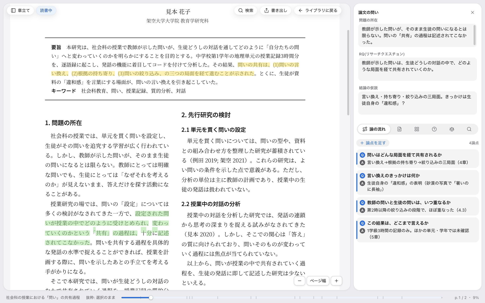
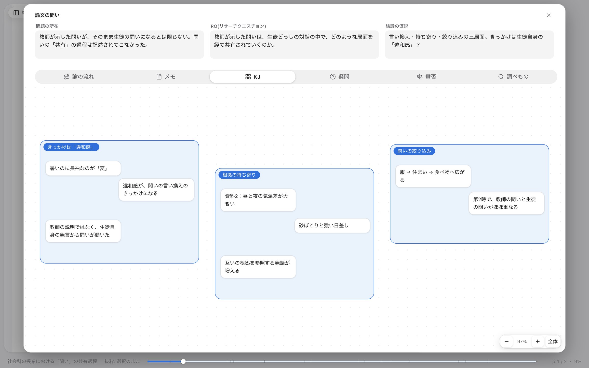
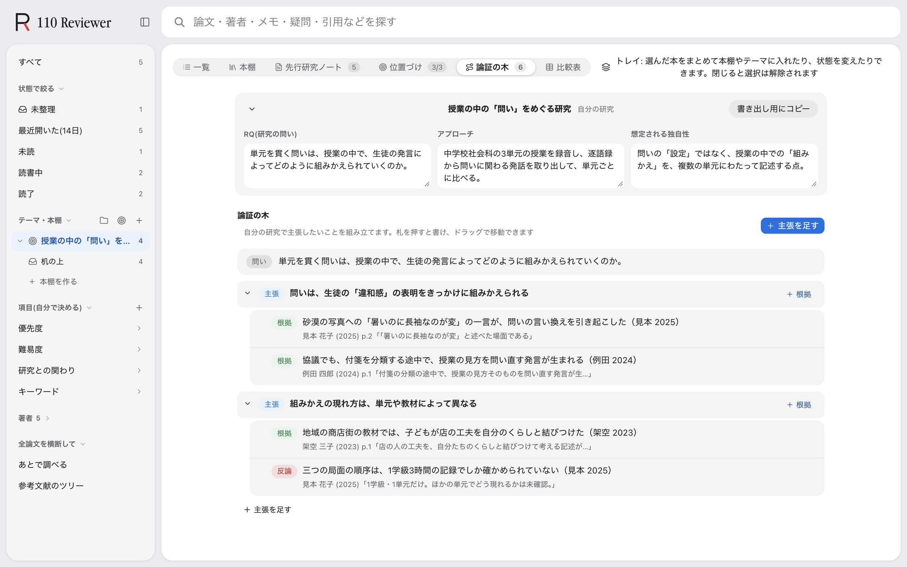
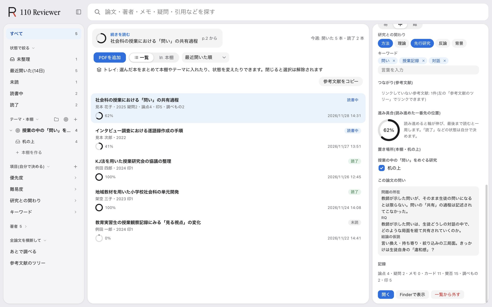
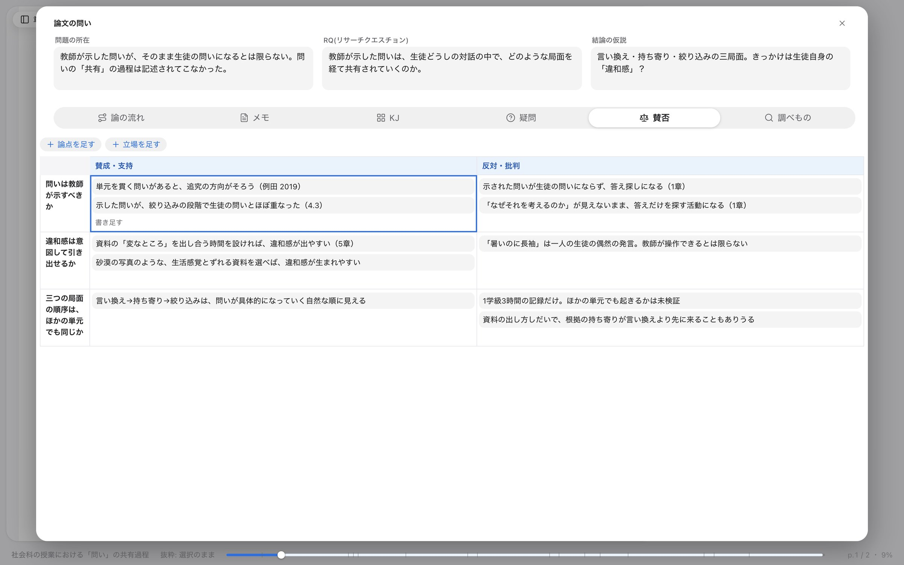
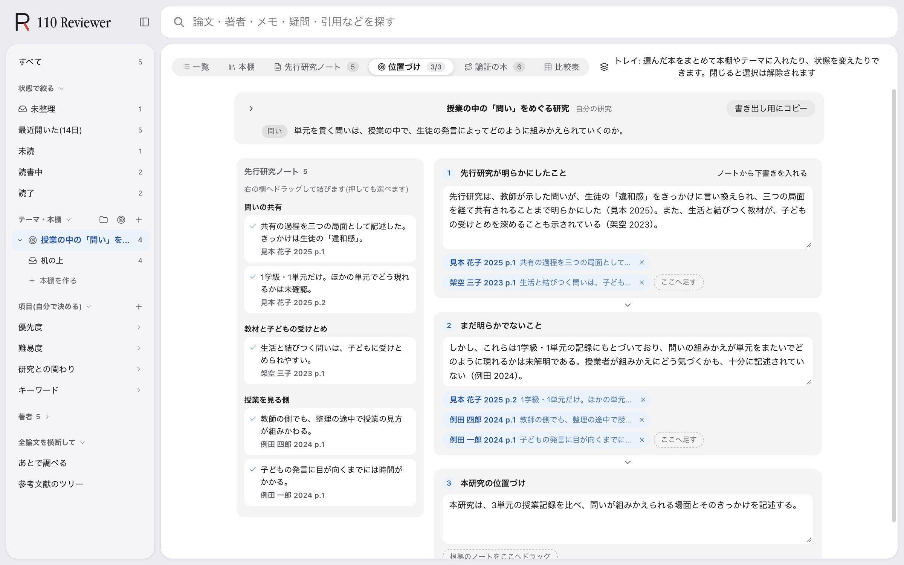
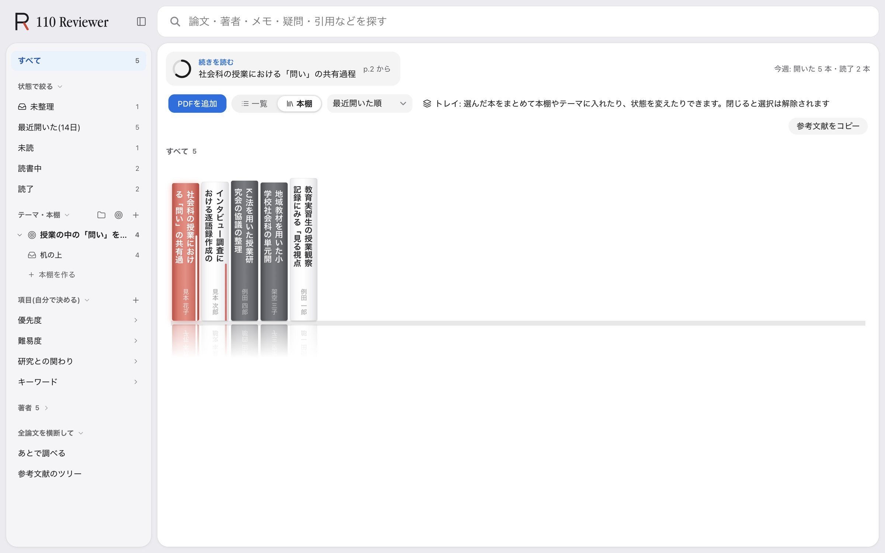
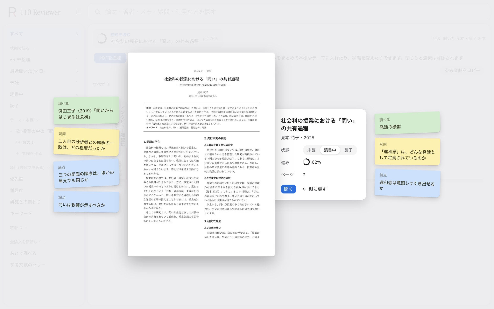

Stück 04 · 配布中
110 Reviewer
問いを最後まで見失わない。
問題の所在・RQ・結論の仮説を横に置いたまま、論文を1本、じっくり読み通すためのリーダー。読んだ論文は本棚に並べ、プロジェクトで自分の研究へと組み立てていけます。

考える場所がすぐ隣に。
右側には、論の流れ・メモ・KJ法・疑問・賛否・調べものの六つの道具。本文をなぞって線を引き、「＋」から疑問や論点をその場で付けられます。本文から抜き出した一文が、そのまま考える材料になります。
道具のタブをもう一度押すと大きな窓に広がり、賛否の表やKJ法のカードを広々と扱えます。

先行研究から、自分の研究へ。
プロジェクトは、自分の研究のための部屋です。RQ・アプローチ・独自性を書いた「自分の研究」のカードを上に置いたまま、読んだ論文を四つの表示で組み立てていきます。
- 先行研究ノート論点を見出しにして、論文ごとの要点をまとめます。読んでいる本文の一文を、原文の引用と位置ごと送れます。
- 位置づけノートを欄へ結びながら、「先行研究は…まで明らかにした。しかし…は未解明」という形で、自分の研究の位置を書きます。
- 論証の木問い(RQ)から主張、根拠へと枝を伸ばし、それぞれの枝に論文の出どころを結びます。
- 比較表プロジェクトの論文を一つの表に並べて、見比べます。
組み立てた内容は、書式つきのまま、または Markdown でまとめてコピーできます。研究計画書や論文の序章を書くときの下書きになります。

読んだ論文を、あとから使える形に。
ライブラリでは、論文の状態(未読・読書中・読了)や、自分で決めた優先度・難易度で整理できます。書誌情報を入れておけば、参考文献を APA 形式でそのままコピー。
- 本棚論文が背表紙で並び、取り出すと表紙と付箋(疑問・論点・調べもの)が見えます。
- 論文をまたいで探す題名・著者・メモ・疑問・引用まで、まとめて検索できます。

画面




できること
論文の問い
問題の所在・RQ・結論の仮説を、どのツールを開いていても画面の右上に。
本文から、ひと押しで
なぞった文に線を引き、「＋」から疑問・論点・メモ・用語・文献を付けられます。
六つの思考ツール
論の流れ・メモ・KJ法・疑問・賛否・調べもの。本文の一文を、そのまま考える材料に。
章立てとシークバー
PDF のしおりから章立てを作り、しおりがなければ見出しを推定。いまどこを読んでいるかが一目で分かります。
ライブラリと本棚
論文をテーマや本棚に整理し、論文をまたいで検索。参考文献は APA 形式でコピーできます。
プロジェクト
自分の研究のRQ・アプローチ・独自性を上に置き、先行研究ノート・位置づけ・論証の木・比較表で組み立てます。
あなたのパソコンの中だけで。
通信はしません。データはこのパソコンの中の SQLite ファイル1つに保存され、PDF 本体は読むだけで書き換えません。操作は自動保存され、ほぼすべて取り消せます。スキャンした PDF の文字の読み取りと、メモアプリへの書き出しは、Mac の機能を使うため Mac 版だけで使えます。
- PlatformMac / Windows
- Network通信しません